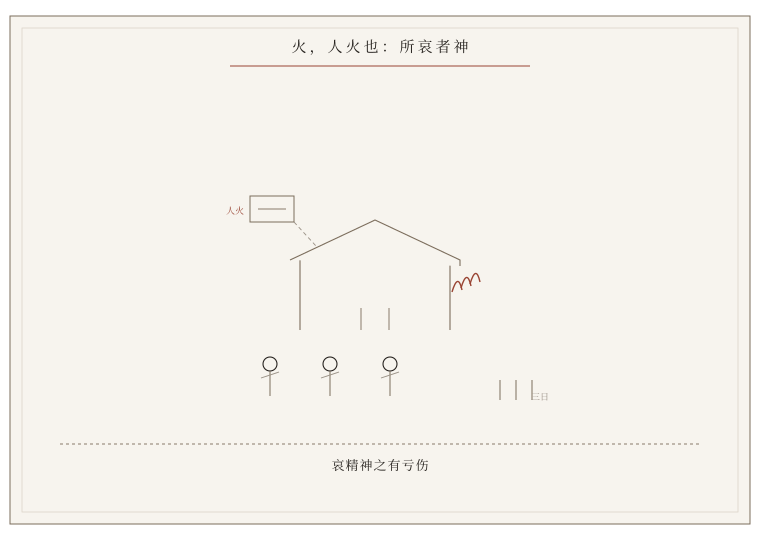

檀弓下 · 四·七十一 · 第 396 课
有焚其先人之室，则三日哭。
说什么事：有人烧了先人的庙，就哭三日。
落在哪一层：以「所伤者何」为界。哭的不是屋，是注所说「精神之有亏伤」。
为何编在此位：上节哭于门外为败，此节哭三日为火。两哭并列，一为国之耻，一为家之神。
【经】有焚其先人之室，则三日哭。
【注】谓人烧其宗庙。哭者，哀精神之有亏伤。故曰：「新宫火，亦三日哭。」火，人火也。新宫火，在鲁成三年。
【疏】此一节论哀先人宗庙伤之事。○注「火人」至「三年」。○正义曰：案宣十六年《左传》云：「人火曰火，天火曰灾。」「新宫」者，鲁宣公庙，故成三年《公羊传》云：「新宫者何？宣公之宫也。」
焚 烧。
先人之室 先人之庙。注云「宗庙」。
三日哭 哭三日而止。
精神 神灵之所凭。
亏伤 亏损伤损。
人火 人为之火。
天火 自然之火，谓之灾。
新宫 鲁宣公之庙。
有人烧了先人的宗庙，就哭三日。
此章一句，极短。
一句之中有三事：所焚者庙，所哭者神，所限者三日。
短到不能再短，而分寸全在：哭有对象，哭有日数。
第一层 「先人之室」不是屋 注一句断定：「谓人烧其宗庙。」
此条不为房产而立，为神灵而立。 若只是屋，烧了再盖；庙被烧，神无所依。
第二层 「哀精神之有亏伤」 注此六字，是全章之骨。
礼之哭，哭的是「亏伤」，不是「损失」。 损失可偿，亏伤不可偿。
第三层 三日的数 三日为哭之常数。此条与大丧、大故同其数。
礼不肯以「事情大小」定哭之久暂，只以「所伤者何」定之。 庙焚三日，与亲死三日同科。
第四层 「新宫火，亦三日哭」 注引鲁成三年新宫之灾为证——「亦」字是关键词：同样是三日，故可援以为例。
礼的类推，靠的是「同其数」，不是「同其事」。
第五层 人火与天火 注特标「火，人火也」，疏引《左传》「人火曰火，天火曰灾」。
此条专为人火而立。 人为之火烧庙，是国家有失于人；天火则别有记法。
礼于同一场火，先辨其来处，再定其辞。此其严处。
第六层 三日的界 三日而止。
礼不许哭到无尽。 庙可复立，神可复依；哭以三日为节，节尽则事起。
第七层 与上节对读 上节哭于库门之外，此节哭三日。
一在门外，一在日中；一为耻，一为神。礼之哭，从不肯只有一种哭法。
与今日何干 今之物毁，多先算价、后算责，独不及「所伤者何」。
此章给一句：先分清烧掉的是屋，还是屋里的东西。
| 左 | 右 |
|---|---|
| 焚其先人之室 | 烧宗庙 |
| 所焚者 | 神所凭，非屋 |
| 哭 | 哀精神亏伤 |
| 三日 | 哭之常数 |
| 新宫火 | 亦三日哭 |
| 人火曰火 | 人为 |
| 天火曰灾 | 自然 |
| 三日而止 | 哭有节 |
| 庙可复立 | 节尽事起 |
画一幅简略的宗庙被焚场景，视点平视。画面中部画一座小庙：两根立柱、一道屋檐、檐下一道门限。庙之右檐角画三缕向上的弧线表示火，火形不得张狂。庙前画三人跪坐，皆低首掩面。三人右侧的地面画三条并列的短竖线，等距，示三日之数。画面左上方画一只极小的方框，框内一横，其旁一条虚斜线指向庙，表示「人火」。不画烟。不画文字。赭色只用在那三缕火线上。
